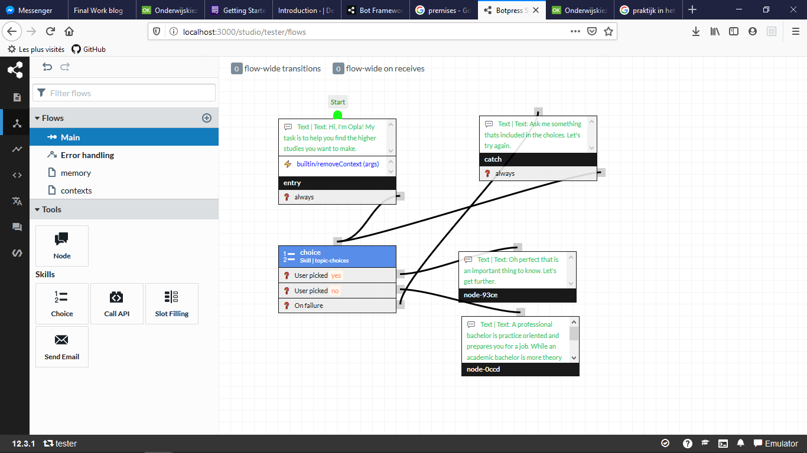

Introductie
Dit is het laatste deel van mijn vooronderzoek wat de keuze van een chatbot framework betreft. In dit deel zal ik nog een laatste framework testen, dit framework is botpress. Hierna zal ik de voor- en nadelen van elk framework dat ik uitgeprobeert heb oplijsten. Op basis hiervan zal ik het meest gepaste framework gebruiken om mijn chatbot te maken dat als opleidingsadvizeur zal dienen.
Botpress
Botpress in een open source chatbot building platform. Om Botpress te gebruiken moeten wij een app installeren deze app start zich op in de browser. We kunnen Botpress dus locaal runnen, het is ook mogelijk om op de cloud tu runnen of op uw eigen server.
Botpress is gemakkelijk te gebruiken en we kunnen heel snel een redelijk complexe chatbot maken. De interface waarmee we de chatbot maken is heel verschillend van wat ik tot nu toe geprobeert heb.
Ik heb hier een screenshot van de interface bij geplaatst.
Ik moet toegeven dat ik heel erg aangenaam verbaasd ben door dit framework. Ik heb voor de moment nog geen slechte punten gevonden. Natuurlijk is er één voordeel dat automatisch een nadeel met zich meebrengt namelijk dat wanneer een chatbot niet op de cloud gehost wordt, de deployment ervan iets moeilijker is. Ik ben dus niet volledig afhankelijk van een cloud platform maar zal wel mijn chatbot moeten hosten om het te kunnen laten uitproberen door testpersonen en om het op een webpagina te laten verschijnen.
Voor- en Nadelen
Uit alle chatbot frameworks dat ik uitgeprobeert heb zijn er 4 dat ik onthoud als mogelijke keuzes. Deze frameworks zijn Amazon Lex, Dialogflow, Rasa en Botpress. Waarvan de twee eerste in deze lijst cloud gehoste applicaties zijn en de twee anderen open source zijn en lokaal op mijn pc kunnen runnen.
Cloud gehoste chatbots
Amazon Lex
Voordelen
- Eenvoudig te gebruiken
- Veel mogelijke instellingen
- Weing/geen code schrijven
- Gemakkelijk om zaken op te slagen in een DB
- Alles wat nodig is voor deployment vindt je op AWS terug
Nadelen
- Cloudgehost dus je bent afhankelijk van uw platform
- Ik heb een gelimiteerd aantal credits en weet niet wat er gebeurt wanneer ik er geen meer heb
- Documentatie is (volgens mij) niet gemakkelijk begrijpbaar
- Deployment op website ziet er niet eenvoudig uit
Dialogflow
Voordelen
- Heel gemakkelijk te gebruiken
- Intuitieve interface
- Gemakkelijk deployen op website
- Weinig knoppen
- Geen code te schrijven
Nadelen
- Om het layout van de chatbot te kunnen veranderen is het even moeilijk als op open source frameworks
- Afhankelijk van google
Open Source frameworks
Rasa
Voordelen
- Toegang tot code (code op eigen computer)
- Niet afhankelijk van een platform
- Je kiest hoe je uw chatbot host
- Veel personalisatie mogelijk
- Goede interface wanneer Rasa x gebruikt wordt
Nadelen
- Moeilijk te installeren
- Deployment is ingewikkeld
- Niet heel snel
- Minder intuitief dan Dialogflow en Botpress
Botpress
Voordelen
- Zelfde voordelen als rasa
- Interface is beter dan die van rasa (volgens mij de beste interface)
- Applicatie is sneller dan rasa
- Chatbot builder interface is heel bruikelijk
- Goede documentatie
Nadelen
- Deployment is moeilijker dan bij cloud platformen
Voor- en Nadelen
Na het testen van 6 verschillende frameworks om chatbots te maken. Heb ik gekozen om voor dit project het framework Botpress te gebruiken. Dit framework heeft als belangrijk voordeel dat hij open source is en toch kwa interface en gebruikers ervaring zeker even goed is als amazon Lex en Tensorflow, ik zou zelfs zeggen dat naar mijn mening de interface van Botpress nog beter is, het opbouwen van een conversatie gaat vanzelf en de interface in schema vorm geeft een heel goed inzicht over de structuur van de chatbot. Indien ik Botpress niet op de laatste minuut uitgeprobeert zou hebben, zou ik waarschijnlijk voor Tensorflow gekozen hebben, de super snelle deployment van de chatbots is echt een enorm voordeel tegenover de andere frameworks dat ik uitgeprobeert heb. Bijna elke keer is het deployment proces het enige gedeelte van het framework waar alles opeens ingewikkeld wordt, terwijl het cruciaal is.
Dit is dus het einde van al mijn testen van chatbot frameworks. Nu kan ik beginnen met het opbouwen van een conversatie structuur dat gebruikers zal helpen met alles wat betreft studiekeuzes.
Naast al deze testen heb ik nog iets heel belangrijks begrepen. Ik moet toegeven dat toen ik dit project begon, een twijfel had over het echte nut van chatbots. Ik vroeg me af of deze niet een beetje nutteloos waren. Waarom zou ik met een chatbot discusseren terwijl ik alle informatie op mijn website terug kan vinden of dat ik gewoon een formulier zou kunnen invullen. Wel ik heb het antwoord hierop denk ik gevonden en het is redelijk voor de hand liggend. Het is veel aangenamer, het is gemakkelijker en met een chatbot discusseren is precies alsof we een spel spelen. Het maakt alles minder saai en monotoon. Het is leuker om aan een chatbot te vragen “wat zijn studiepunten?” en dan een kort antwoord te krijgen dat precies persoonlijk naar u gericht is, dan te gaan zoeken op een website naar waar je deze informatie eventueel zou kunnen vinden en als je het kan vinden eindelijk te kunnen lezen en daarna uw volgende vraag opzoeken. Dit is niet enkel saai en monotoon maar ook vermoeiend, misschien niet als je één vraag hebt, maar als je er drie hebt dan kan ik me heel gemakkelijk inbeelden dat je liever een chatbot zou gebruiken.
Bedankt voor het lezen.
Nicolas Pecher